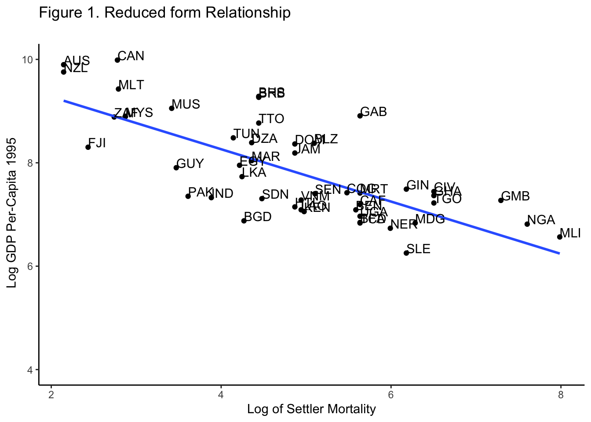

6 Instrumental Variables: The Colonial Origins of Comparative Development
From now on, we will implement an event study case based on an empirical paper to illustrate in practice how the analysis is made. The examples follow the empirical exercises of Jaakko’s graduate course Tópicos de Microeconomía at ITAM.For the theory and context of the method, check Chapter 7 of Scott Cunningham’s Causal Inference Mixtape.
We will use the following packages: install them before loading them.
# 1. Data arrange, importing data, strings and more. Check what it includes!
library(tidyverse)
# 2. Read .dta Format
library(haven)
# 3. Robust standard errors
library(estimatr)
# 4. ivreg: instrumental variables
library(ivreg) 6.1 Paper Discussion
- What kind of institution do Acemoglu et al. study in their paper? How do they measure the presence of this institution?
Acemoglu et al. study institutions with more secure property irghts, and less distortionary policies. They are referred to “good institutions”, and are measured with the Average Protection Against Expropiation Risk that is measured on a scale from 0 to 10.
- What is their main finding, i.e., how does this institution influence income levels?
6.3 Endogeneity Discussion
Institutions may be endogenous for various reasons. Acemoglu et al. thus use an instrumental variables approach.
- What instrument do they use? How do they justify the use of this instrument?
The proposed instrument is the mortality of settlers. They justify it by arguing that mortality of settlers doesn’t affect the GDP per capita today.
- One important criterion for a good instrument is the exclusion restriction. What are some threats to this? What do Acemoglu et al. conclude about these threats?
The exclusion restriction states that the instrument \(Z\) must also be uncorrelated with the error term, \(\epsilon\) . A threat is that past health determines current health; thus, past health is correlated with GDP. Although, they justify the uncorrelatedness of mortality with GDP by arguing that the natives were resiliant to the deseases that killed the settlers.
6.4 Instrumental Variables
- Plot a nice-looking graph that illustrates the relationship between the outcome variable and the instrument.
ggplot(filter(table5, f_french + f_brit >= 1), aes( y = logpgp95, x = logem4, label = shortnam)) +
geom_point() +
geom_smooth(method = "lm", se = FALSE) +
scale_y_continuous(limits = c(4, 10)) +
labs(x = "Log of Settler Mortality", y = " Log GDP Per-Capita 1995", title = "Figure 1. Reduced form Relationship
")+
geom_text(hjust=0, vjust=0) +
theme_classic() 
- Then, let us have a look at the reduced-form regression more formally. Run the regressions in part (b) but replace institutional quality with the instrumental variable. Briefly discuss the regression results.
f1 <- lm(logpgp95 ~ logem4, data = table5)
summary(f1)##
## Call:
## lm(formula = logpgp95 ~ logem4, data = table5)
##
## Residuals:
## Min 1Q Median 3Q Max
## -2.71304 -0.53326 0.01954 0.47188 1.44673
##
## Coefficients:
## Estimate Std. Error t value Pr(>|t|)
## (Intercept) 10.66025 0.30528 34.92 < 2e-16 ***
## logem4 -0.56412 0.06389 -8.83 2.09e-13 ***
## ---
## Signif. codes: 0 '***' 0.001 '**' 0.01 '*' 0.05 '.' 0.1 ' ' 1
##
## Residual standard error: 0.7563 on 79 degrees of freedom
## (82 observations deleted due to missingness)
## Multiple R-squared: 0.4967, Adjusted R-squared: 0.4903
## F-statistic: 77.96 on 1 and 79 DF, p-value: 2.094e-13We note that the F-Statistic is 77.96 , therefore the instrument is strong.
6.5 IV Part 2
Try now repeating the regressions in part (b) using IV estimation. Discuss both the first stage and 2SLS results. Try also locating the first-stage F statistic in the regression output.
- Is the instrument weak or strong?
- Do you know why it is important to have a strong instrument?
Run then the following OLS regressions, and use robust standard errors:
Regress the outcome variable on institutional quality, no controls
Regress the outcome variable on institutional quality, and control for an indicator for French legal origin, being a former French colony, share of Catholics, share of Muslims, and share of other than Catholic/Protestant/Muslim
lm_2 <- lm_robust(logpgp95 ~ sjlofr + f_french + avexpr + catho80 + muslim80 + no_cpm80 , data = table5)
summary(lm_2)##
## Call:
## lm_robust(formula = logpgp95 ~ sjlofr + f_french + avexpr + catho80 +
## muslim80 + no_cpm80, data = table5)
##
## Standard error type: HC2
##
## Coefficients:
## Estimate Std. Error t value Pr(>|t|) CI Lower CI Upper DF
## (Intercept) 4.6663414 0.403283 11.5709 2.131e-20 3.866617 5.4660660 104
## sjlofr 0.2124659 0.227705 0.9331 3.529e-01 -0.239082 0.6640135 104
## f_french -0.2827433 0.199424 -1.4178 1.592e-01 -0.678208 0.1127215 104
## avexpr 0.5417709 0.035225 15.3802 1.521e-28 0.471918 0.6116239 104
## catho80 0.0009357 0.002681 0.3491 7.277e-01 -0.004380 0.0062514 104
## muslim80 -0.0012009 0.003041 -0.3949 6.937e-01 -0.007231 0.0048291 104
## no_cpm80 -0.0063496 0.002810 -2.2598 2.592e-02 -0.011922 -0.0007776 104
##
## Multiple R-squared: 0.6701 , Adjusted R-squared: 0.651
## F-statistic: 101.8 on 6 and 104 DF, p-value: < 2.2e-16- Regress the outcome variable on institutional quality, control for location of the capital (absolute latitude), an indicator for French legal origin, being a former French colony, share of Catholics, share of Muslims, and share of other than Catholic/Protestant/Muslim
lm_3 <- lm_robust(logpgp95 ~ avexpr + lat_abst + sjlofr + f_french + catho80 + muslim80 + no_cpm80 , data = table5)
summary(lm_3)##
## Call:
## lm_robust(formula = logpgp95 ~ avexpr + lat_abst + sjlofr + f_french +
## catho80 + muslim80 + no_cpm80, data = table5)
##
## Standard error type: HC2
##
## Coefficients:
## Estimate Std. Error t value Pr(>|t|) CI Lower CI Upper DF
## (Intercept) 4.7837413 0.411063 11.6375 1.742e-20 3.968495 5.598987 103
## avexpr 0.4769486 0.056589 8.4283 2.246e-13 0.364718 0.589179 103
## lat_abst 0.8427422 0.522582 1.6126 1.099e-01 -0.193677 1.879161 103
## sjlofr 0.2143537 0.220776 0.9709 3.339e-01 -0.223504 0.652211 103
## f_french -0.2961695 0.189465 -1.5632 1.211e-01 -0.671928 0.079589 103
## catho80 0.0022475 0.002708 0.8298 4.086e-01 -0.003124 0.007619 103
## muslim80 -0.0003111 0.003005 -0.1035 9.177e-01 -0.006270 0.005648 103
## no_cpm80 -0.0047503 0.003049 -1.5579 1.223e-01 -0.010798 0.001297 103
##
## Multiple R-squared: 0.6798 , Adjusted R-squared: 0.658
## F-statistic: 98.54 on 7 and 103 DF, p-value: < 2.2e-16- What is the relationship between institutional quality and income levels?
There is a positive relationship between institutional quality and income levels.
- Is this relationship statistically significant and robust to the inclusion of additional control variables?
The relationship is statistically significant in the three cases; nevertheless, with additional control variables the effect of institutional quality decreases.
- Regress the outcome variable on institutional quality, no controls
iv1 <- ivreg(logpgp95 ~ avexpr | logem4, data = table5)
summary(iv1)##
## Call:
## ivreg(formula = logpgp95 ~ avexpr | logem4, data = table5)
##
## Residuals:
## Min 1Q Median 3Q Max
## -2.28175 -0.55059 0.03401 0.62273 1.57418
##
## Coefficients:
## Estimate Std. Error t value Pr(>|t|)
## (Intercept) 2.3702 0.8376 2.830 0.00612 **
## avexpr 0.8684 0.1250 6.946 1.77e-09 ***
##
## Diagnostic tests:
## df1 df2 statistic p-value
## Weak instruments 1 68 29.80 7.29e-07 ***
## Wu-Hausman 1 67 25.17 4.11e-06 ***
## Sargan 0 NA NA NA
## ---
## Signif. codes: 0 '***' 0.001 '**' 0.01 '*' 0.05 '.' 0.1 ' ' 1
##
## Residual standard error: 0.8899 on 68 degrees of freedom
## Multiple R-Squared: 0.3045, Adjusted R-squared: 0.2942
## Wald test: 48.25 on 1 and 68 DF, p-value: 1.771e-09- Regress the outcome variable on institutional quality, and control for an indicator for French legal origin, being a former French colony, share of Catholics, share of Muslims, and share of other than Catholic/Protestant/Muslim
iv2 <- ivreg(logpgp95 ~ sjlofr + f_french + catho80 + muslim80 + no_cpm80 | avexpr | logem4 , data = table5)
summary(iv2)##
## Call:
## ivreg(formula = logpgp95 ~ sjlofr + f_french + catho80 + muslim80 +
## no_cpm80 | avexpr | logem4, data = table5)
##
## Residuals:
## Min 1Q Median 3Q Max
## -1.8545 -0.5175 0.0298 0.5221 2.0379
##
## Coefficients:
## Estimate Std. Error t value Pr(>|t|)
## (Intercept) 2.5946375 1.2043687 2.154 0.035 *
## avexpr 0.8943097 0.1374527 6.506 1.44e-08 ***
## sjlofr 0.3014438 0.3462820 0.871 0.387
## f_french 0.1505522 0.3184417 0.473 0.638
## catho80 -0.0007391 0.0090070 -0.082 0.935
## muslim80 -0.0081192 0.0078708 -1.032 0.306
## no_cpm80 -0.0136571 0.0087471 -1.561 0.123
##
## Diagnostic tests:
## df1 df2 statistic p-value
## Weak instruments 1 63 21.08 2.16e-05 ***
## Wu-Hausman 1 62 21.92 1.60e-05 ***
## Sargan 0 NA NA NA
## ---
## Signif. codes: 0 '***' 0.001 '**' 0.01 '*' 0.05 '.' 0.1 ' ' 1
##
## Residual standard error: 0.8005 on 63 degrees of freedom
## Multiple R-Squared: 0.4786, Adjusted R-squared: 0.4289
## Wald test: 11.31 on 6 and 63 DF, p-value: 1.541e-08- Regress the outcome variable on institutional quality, control for location of the capital (absolute latitude), an indicator for French legal origin, being a former French colony, share of Catholics, share of Muslims, and share of other than Catholic/Protestant/Muslim
iv3 <- ivreg(logpgp95 ~ lat_abst + sjlofr + f_french + catho80 + muslim80 + no_cpm80 | avexpr | logem4, data = table5)
summary(iv3)##
## Call:
## ivreg(formula = logpgp95 ~ lat_abst + sjlofr + f_french + catho80 +
## muslim80 + no_cpm80 | avexpr | logem4, data = table5)
##
## Residuals:
## Min 1Q Median 3Q Max
## -2.40964 -0.65770 -0.02513 0.75136 2.58007
##
## Coefficients:
## Estimate Std. Error t value Pr(>|t|)
## (Intercept) 1.547088 2.148742 0.720 0.4742
## avexpr 1.131255 0.348786 3.243 0.0019 **
## lat_abst -2.051906 1.954973 -1.050 0.2980
## sjlofr 0.363177 0.455680 0.797 0.4285
## f_french 0.266396 0.432506 0.616 0.5402
## catho80 -0.002328 0.011631 -0.200 0.8420
## muslim80 -0.008077 0.010076 -0.802 0.4259
## no_cpm80 -0.017948 0.012144 -1.478 0.1445
##
## Diagnostic tests:
## df1 df2 statistic p-value
## Weak instruments 1 62 5.943 0.017657 *
## Wu-Hausman 1 61 15.599 0.000206 ***
## Sargan 0 NA NA NA
## ---
## Signif. codes: 0 '***' 0.001 '**' 0.01 '*' 0.05 '.' 0.1 ' ' 1
##
## Residual standard error: 1.025 on 62 degrees of freedom
## Multiple R-Squared: 0.1593, Adjusted R-squared: 0.06439
## Wald test: 6.344 on 7 and 62 DF, p-value: 1.238e-05By examinating the weak instrument F statistic, only in the third case by implementing the location of the capital (absolute latitude) the instrument is weak with an F statistic of 5.93 < 10.